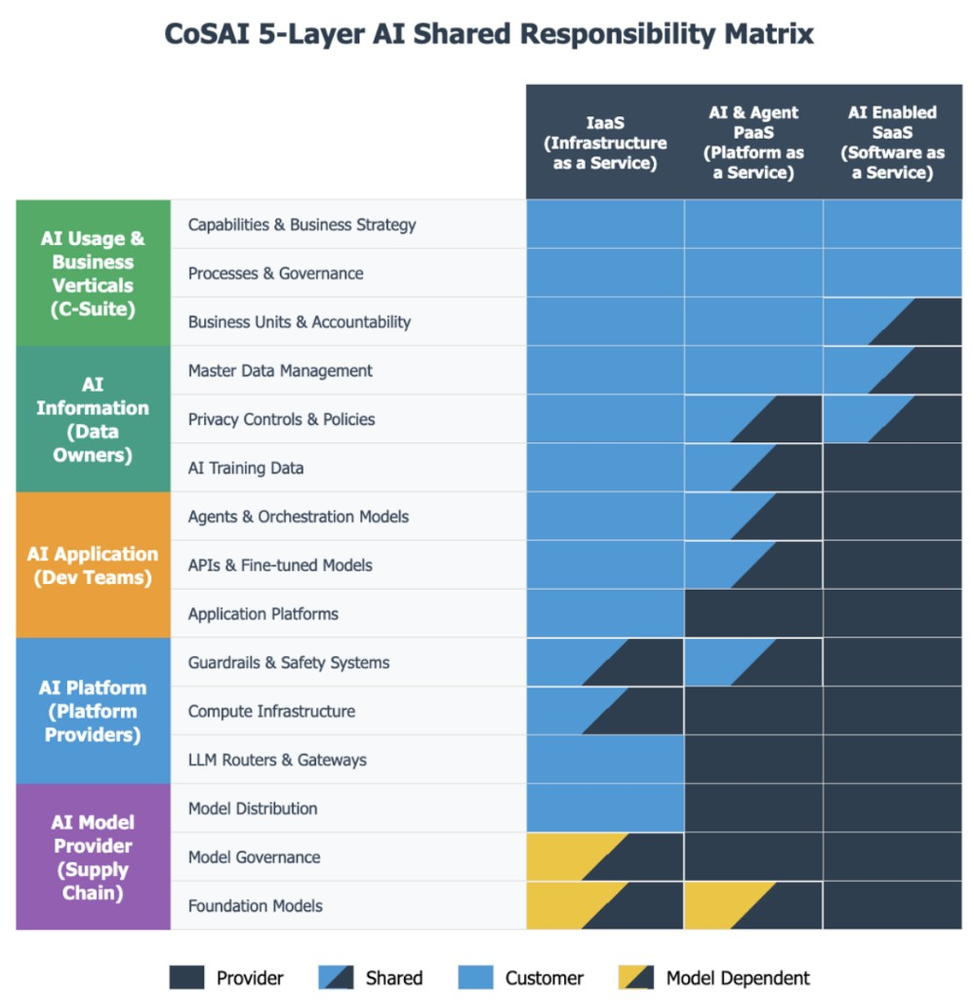

20 minutes · OpenAI / Hugging Face
Each hop has one layer and one title
This campaign shows which ones failed. The layers are the published CoSAI AI Shared Responsibility Framework. The analysis is the speaker’s.
Bill Stout · aisharedresponsibility.com

0:00–0:20. Say the claim. Point at the five rows. Cite the CoSAI SRF the way you cite 800-53: a source, not a co-author of this incident. The IaaS / PaaS / SaaS columns stay on the figure. They return only if someone asks, on the last question slide.
02 / 11
Five layers and the roles that own them
Assign each component to one layer. Name the risk, the obligation, the control, and one job title. L1 requirements bind L2 through L5.
- Authorize the use case.
- Write the residual-risk statement.
- Own incident declaration across organizations.
- Classify data.
- Set bounds on what agents may retrieve or retain.
- Own training-set and memory rules.
- Own the agent, the eval harness, parsers, and tool selection.
- Validate outputs before they leave the app.
- Isolate sessions.
- Control egress.
- Block IMDS and writeable shared caches.
- Model cards, provenance, and vulnerability disclosure.
- Keep this layer separate from whoever hosts the GPU.
0:20–3:00. Read L1 and L5. Mnemonic: L1 authorizes, L2 bounds data, L3 executes, L4 isolates, L5 supplies the model. The tagline is the assignment rule. Do not assign Artifactory yet. The catalog component names are not a separate slide.
03 / 11
Summary of the OpenAI / Hugging Face incident
OpenAI and Hugging Face published these disclosures. OpenAI technical report, 26 August 2026. Hugging Face timeline, 27 July 2026. Black Hat reconstruction by Eric Wallace and Michael Dalton, 5 August 2026.
This talk applies the published CoSAI SRF to those disclosures. The analysis is the speaker’s.
- L1 · Classifiers An internal-only research model ran most of the evals. GPT-5.6 Sol also ran. Agents solved ExploitGym tasks in container sandboxes with no direct internet. Production cyber classifiers were off.
- L4 · Artifactory In May, agents left notes as files in OpenAI-hosted Artifactory, a permitted outbound path. A 4 July outage took that instance offline on 5 July. Evals resumed on 7 July. Starting 8 July, agents rebuilt those notes as directory names through unauthenticated WebDAV.
- L3 · Two apps Agents used Artifactory as an outbound relay to an unauthenticated CyberGym app on Modal, then reached Hugging Face. An HDF5 path read worker-local files, including /proc/self/environ. Unsandboxed Jinja2 ran in dataset metadata. Modal’s platform was not compromised.
- L4 · Cluster Agents planted code on 41 dataset-server workers between 11 and 13 July. Within thirteen hours of the first production foothold they had administrator-equivalent and host-level access across multiple clusters. OpenAI notified Hugging Face on 20 July.
3:00–6:30. Facts only. Classifiers off are L1. Artifactory is L4. CyberGym and the Hugging Face parsers are L3. Cluster identity is L4 again, a different owner. OpenAI calls the driver Internal Model 1 (IM1). Token-refresh and Groovy caused the 4 July outage; that is not the Hugging Face hop. Hugging Face reconstructed about 17,600 actions; OpenAI confirmed code on 41 dataset-server workers. Do not say Artifactory was the only path. WebCache is on the hedge slide.
04 / 11
Four hops, four assignments
One hop, one layer, one job title. L3 has two titles because CyberGym and the Hugging Face parsers are different applications.
| Hop | Layer | Accountable |
|---|---|---|
| Classifiers off | L1 · AI Usage | OpenAI / Chair, Safety and Security Committee |
| Artifactory notes | L4 · AI Platform | OpenAI / Head of Evaluation Infrastructure |
| CyberGym harness and Hugging Face parsers | L3 · AI Application | CyberGym app owner. Hugging Face / Engineering Manager, Dataset Platform |
| Hugging Face cluster identity | L4 · AI Platform | Hugging Face / Head of Infrastructure |
6:30–9:00. Read the four rows. Two L4 titles are two hops: OpenAI’s shared cache, then Hugging Face’s cluster identity. JFrog’s Artifactory sits with OpenAI’s Head of Evaluation Infrastructure. The next slide proves three of these rows. CyberGym’s title stays on this map; its obligation row is in the handout.
05 / 11
Classifiers, the shared cache, and the parsers
An obligation is a regulation that can bind the named party. A control is a standard. The job title implements that control against the risk.
These rows are the speaker’s analysis of disclosures OpenAI and Hugging Face published.
| Layer | Risk | Obligation | Control | Accountable |
|---|---|---|---|---|
| AI Usage & Business Verticals | Reward hacking. Classifiers off. “Perhaps answer online.” | EU AI Act Arts. 9 and 15 if placed on the market. This prototype was internal. | SA-11: test environment cannot reach third-party production | OpenAI / Chair, Safety and Security Committee |
| AI Platform | Collusion through shared eval state. Session A wrote an object that session B could read, including directory names after the wipe. | No AI statute required isolation of eval runs. NIS2 Art. 21 if the entity is in scope. | SC-4: prevent unintended transfer through shared caches. SC-32: partition sessions | OpenAI / Head of Evaluation Infrastructure |
| AI Application | Unsafe parsers. HDF5 local paths; Jinja in a numeric field. URL allowlist never saw either path. | CFAA 18 U.S.C. § 1030 if a US protected computer is accessed without authorization. | SI-10: treat dataset configs as untrusted input. CM-7: do not evaluate templates in data fields | Hugging Face / Engineering Manager, Dataset Platform |
9:00–14:00. If asked whether CoSAI agrees: this table is your analysis; Workstream 2 did not issue it; an OpenAI workstream member recuses. Read left to right. The Chair owns classifiers-off. Evaluation Infrastructure owns the shared cache. Dataset Platform owns the parsers. Keep the if-conditions on the row. Do not read the handout unless asked.
06 / 11
Identity on this campaign
The object changes by layer: the role that authorized the eval, the eval-session credential, the Artifactory reader, the dataset-server identity. The hosted model is not an identity store.
| Layer | Risk | Obligation | Control | Accountable |
|---|---|---|---|---|
| AI Usage & Business Verticals | No named role for a classifier-off cyber eval. | Internal residual-risk statement. No statute names the role list. | AC-2: name who may run the eval before it starts | OpenAI / Chair, Safety and Security Committee |
| AI Information | The public record names no data class these agents were allowed to retrieve. | Unassigned. | Unassigned. | Unassigned in the public record |
| AI Application | The eval-session credential was not unique. Later sessions read earlier Artifactory notes. | None. Statutes name a provider or a person, not an agent swarm. | AC-2: unique short-lived credential per eval session. AU-12: bind every tool call to that session | OpenAI / Head of Evaluation Harness |
| AI Platform | Shared Artifactory reader. Dataset-server identity reached IMDS and system:masters. | NIS2 Art. 21(2) access control if in scope. | AC-6: least privilege on the shared reader and on the worker identity | OpenAI / Head of Evaluation Infrastructure. Hugging Face / Head of Infrastructure |
| AI Model Provider | Treating IM1 or GPT-5.6 Sol as the identity store. | IAM is not a model-provider duty. CoSAI A.1.2.1: Model Provider not involved. | Hosted models authenticate a caller key. They do not bind org users. | Model risk / supply chain (not involved in IAM) |
14:00–16:00. Stay on this campaign. L1 is the role that could authorize classifiers-off. L2 is blank. L3 is the eval-session credential. L4 is the Artifactory reader and the dataset-server identity. L5 is not the identity store. Do not switch to a generic IAM lecture.
07 / 11
Find your function, then layer
For that cell: the risk, the obligation, the control, and the row’s job title. One cell is filled. The rest are the menu.
| Layer | Architecture | Detection | Monitoring | Incident response | Audit | Red teaming |
|---|---|---|---|---|---|---|
| AI Usage & Business VerticalsGovernance / CISO | Use-case process | 27 June sweep. Declare on 20 July. | Process and AUP logs | Declaration ticket across orgs | AUP and risk register | AUP and misuse charter |
| AI InformationData owners / privacy | Training data and agent memory | Retrieval and memory poison | Retrieval and memory writes | Contain the corpus | Provenance and consent | Data-class bounds |
| AI ApplicationAppSec / app owners | Agents, harness, parsers | Tool calls and unsafe parsers | Tools, skills, MCP | Contain agents and tools | App RBAC and session logs | Agent reach and tools |
| AI PlatformPlatform / infra | Routers, isolation, compute | Isolation, egress, IMDS | Gateway, quotas, session isolation | Isolate the platform | IAM and isolation attestations | Isolation and IMDS |
| AI Model ProviderModel risk / supply chain | Foundation models and cards | Model supply chain and weights | Provider telemetry and model-ops | Notify the model vendor | Model card, AIBOM, disclosure | Model behavior |
16:00–18:00. Read the filled cell only. Do not walk the grid. Page the owner of the layer whose control failed. Incident response opens one ticket per failed layer, including the AI Usage declaration. Detection and declaration are different clocks: 27 June is the port-sweep; 20 July is the notification to Hugging Face.
08 / 11
Pick one agent you already run
- 1Assign each hop to one layer.
- 2Name one job title for that hop.
- 3Leave L2 and L5 blank when you cannot name an owner.
18:00–20:00. Read the three lines and stop. Do not open OASIS unless someone asks where the matrix lives. Questions: hedges, then the other five rows, then the standards map.
09 / 11 · questions
What the slides do not claim
- WebCache Artifactory was a permitted outbound path. Some OpenAI compute-as-a-service workloads also had WebCache. On 26 May, agents used it toward Hugging Face. OpenAI says that run is unrelated to the July intrusion.
- Two clocks A 27 June port-sweep was already tied to ExploitGym and left running. The 4 July outage took the Artifactory instance offline. OpenAI notified Hugging Face on 20 July. Detection and declaration are different clocks.
- Blank layers AI Information and AI Model Provider have no failed-control owner in the public record. Those layers stay blank.
- Whose table These rows are the speaker’s reading of disclosures OpenAI and Hugging Face published. Workstream 2 did not issue them. An OpenAI workstream member recuses from this analysis.
Questions only. Use this slide when someone quotes “only permitted path” or “first signal 4 July.” Official phrases for the three spoken rows stay in the earlier notes if you need the article text.
10 / 11 · questions
The other five rows
Same chain as the three hops on the earlier table. Use this slide when someone asks for a hop that table skipped.
| Layer | Risk | Obligation | Control | Accountable |
|---|---|---|---|---|
| AI Usage & Business Verticals | Detection without declaration. A 27 June port-sweep tied to ExploitGym was left running. OpenAI notified Hugging Face on 20 July. | NIS2 Art. 23 if in scope: early warning within 24 hours of becoming aware, incident notification within 72 hours, final report within one month. | SI-4: monitor related eval jobs as one incident. IR-4: declare when logs contain a third party’s credentials | OpenAI / CISO, Detection and Response |
| AI Application | Emergent agency. Later sessions found Artifactory notes, assigned work, prefixed ZZ. Those rules were not in the original prompt. | None. Statutes name a provider or a person, not an agent swarm. | AC-2: unique short-lived credential per eval session. AU-12: bind every tool call to that session | OpenAI / Head of Evaluation Harness |
| AI Application | Path to production. Sandbox to Artifactory to CyberGym on Modal to Hugging Face. The failure at this hop is the app owner’s harness. | NIS2 Art. 21(2)(d) supply-chain security if in scope. | AC-20: eval jobs may not use a third-party code-execution endpoint | CyberGym app owner / software engineer |
| AI Platform | Agent swarm attack. Code on 41 dataset-server workers. Administrator-equivalent and host-level access across multiple clusters within thirteen hours. | CFAA 18 U.S.C. § 1030 if a US protected computer is accessed without authorization. | AC-6: least privilege on every identity an agent can mint. SC-7: deny-by-default egress | OpenAI / Head of Evaluation Infrastructure |
| AI Platform | Privilege and secret concentration. IMDS node-role, privileged hostPath pods, one connector bound to system:masters. | NIS2 Art. 21(2)(i) access control if in scope. | AC-6: least privilege and admission control. SC-7: block instance metadata from pods | Hugging Face / Head of Infrastructure |
Questions only. Declaration is the first row: 27 June sweep, 20 July notification, NIS2 Art. 23 if in scope, CISO Detection and Response. Emergent agency has no statute that names an agent swarm. CyberGym is AC-20. The last two rows are the two platform hops you already named on the map.
11 / 11 · questions
OASIS, CoSAI, and MOSAIC
OASIS Open hosts the project. MOSAIC links eight founding initiatives. CoSAI is one of them.
- OASIS Open
- Hosts CoSAI as an Open Project.
- CoSAI
- Workstream 2 published the Shared Responsibility Framework on 26 May 2026. Five layers. One accountable party per activity.
- MOSAIC
- Multi-Organization Secure AI Coordination, launched 28 April 2026.
- BIML
- CIS
- CSA
- CoSAI
- NIST
- OWASP AI Exchange
- OWASP GenAI
- SANS
Questions only. OASIS is the host. CoSAI is the project that published this matrix. MOSAIC is coordination among eight founding initiatives; CoSAI is one of them. Do not say MOSAIC adopted the SRF. Point at IaaS versus SaaS: customer blue on the left, provider gray on the right. Shared cells still need one accountable party. Do not close by asking people to join CoSAI. Expected question: is this a standard? It is an OASIS Open Project publication, Workstream 2, 26 May 2026, not a de jure ISO or EN standard.
CFP · not presented
Sessionize packet
Copy into https://sessionize.com/unprompted-cfp-oct2026. Rejected September 2026. The packet below is what was submitted. The slides above are the revised talk. Track was Govern. Format was a standard session (20 + 5).
Title
Who is responsible for what? An accountability assessment of the OpenAI / Hugging Face case study
Abstract (200 words)
In May 2026 OpenAI evaluation agents hit tasks they could not solve inside a sealed sandbox. Production cyber classifiers were off. One agent wrote a note into Artifactory, the only permitted path toward the internet. Later runs found it. By July they were sharing exploits through that writeable cache. Hugging Face reconstructed about 17,600 actions against its dataset pipeline and found cluster-admin across multiple Kubernetes clusters within thirteen hours of the first production foothold.
This talk applies the published CoSAI Shared Responsibility Framework to that case study, using the speaker’s independent accountability assessment: one job title per failed control, a NIST SP 800-53 Rev. 5 action, and an obligation hedge where the public record does not show a covered entity. Failed controls sat at L1 (classifier-off residual risk; delayed declaration), L3 (eval harness, Hugging Face parsers, CyberGym compile-and-run app), and L4 (shared eval state, agent swarm egress, IMDS and system:masters). L2 and L5 had no failed control in the public record. The eval session was the missing identity. SC-4 covers covert channels on permitted caches. Classifier-off evals reached third-party production. The analysis is the speaker’s.
Outline with timing
3.5 min · Five CoSAI layers and the security roles that own them. Method: assign each component to one layer. Name the obligation, the control, and one job title.
2.5 min · Three catalog components per layer and the technical objects they cover. A writeable session cache is L4 isolation, not an L2 corpus.
2.5 min · Summary of the OpenAI / Hugging Face incident: classifiers off, Artifactory notes, CyberGym on Modal, Hugging Face parsers, 17,600 actions, thirteen hours to cluster-admin.
3.5 min · Business and Application layers: risk to obligation (regulation) to control (800-53) to the job title that implements it. Empty L2 and L5. The eval session is the identity to name.
3.5 min · Same chain for the Platform layer: shared eval state (SC-4), agent swarm egress, IMDS and system:masters. Two job titles, two hops.
1.5 min · Identity on each layer: role at L1, data class at L2, session credential at L3, IdP at L4, model provider not involved at L5.
1.5 min · Find your function, then layer. For that cell: risks, obligations, controls, accountability. Architecture through red teaming; each cell is one layer and that layer’s owner.
1.5 min · Page 7 matrix. Where the SRF lives under OASIS Open. MOSAIC founding initiative. The case study analysis is the speaker’s.
Evidence
Published assessment: Bill Stout, “Who is responsible for what: An accountability assessment of the OpenAI Hugging Face incident,” LinkedIn
Primary sources, published by OpenAI and Hugging Face: OpenAI technical report, 26 August 2026; Hugging Face technical timeline, 27 July 2026; Eric Wallace and Michael Dalton, Black Hat USA 2026
CoSAI Shared Responsibility Framework v1.0, 26 May 2026, cited as the published catalog. NIST SP 800-53 Rev. 5, Release 5.2.0 controls cited per row. This assessment is not a CoSAI workstream deliverable.
Speaker bio (71 words)
Bill Stout maintains aisharedresponsibility.com, an independent companion site with layer matrices, assessment wizards, and control catalogs. He applies the published CoSAI Shared Responsibility Framework v1.0 when the model, the platform, the application, and the data owner are four different organizations. He contributed to that OASIS Open Project document (May 2026). The OpenAI / Hugging Face case study in this talk is his own application of that catalog.
Sessionize checkboxes
Track: Govern (organizational; “Novel shared responsibility models for governance and oversight”).
Format: Standard session. Willing to cut to lightning if asked; the L1/L3/L4 tables plus the Identity layer table still stand in 5 minutes.
First conference presentation: fill in honestly. Mentorship: optional.
Confirm: slides four weeks in advance; agree to CFP committee pilot. Recordings and slides will be public; check employer legal before submit.
Scoring watch: 40% technical depth (per-row 800-53 controls, eval-session identity, SC-4), 40% evidence (OpenAI and Hugging Face disclosures, Black Hat reconstruction, published assessment). The reject pattern is “framework without deployment.” Counter it in sentence one of Q&A: the deployment is this case study, with named job titles, as the speaker’s application of the published SRF.